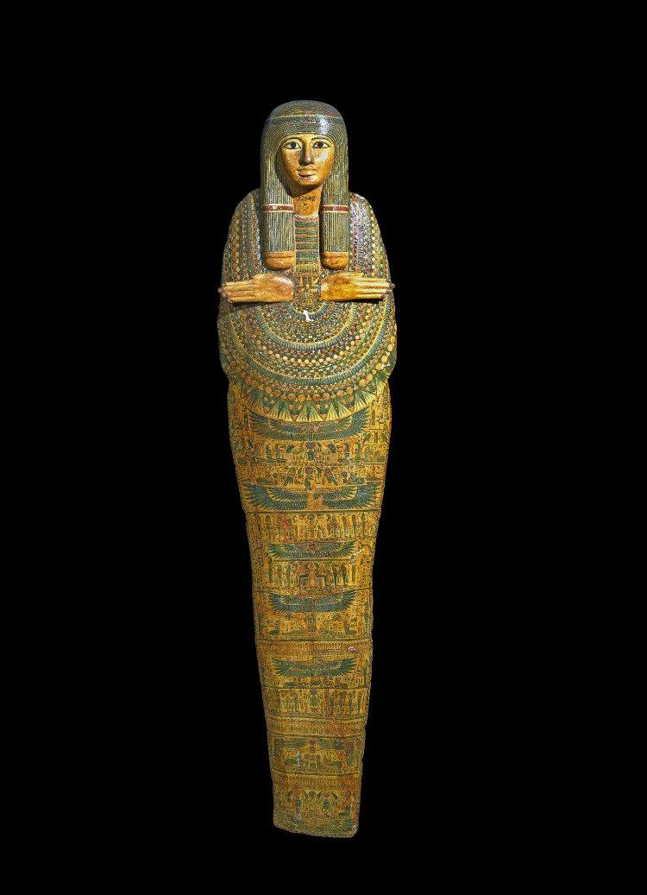
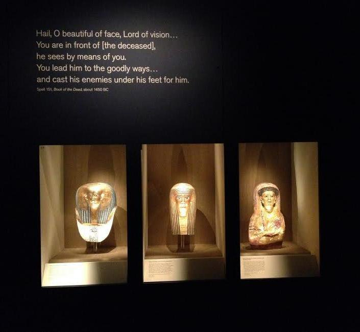
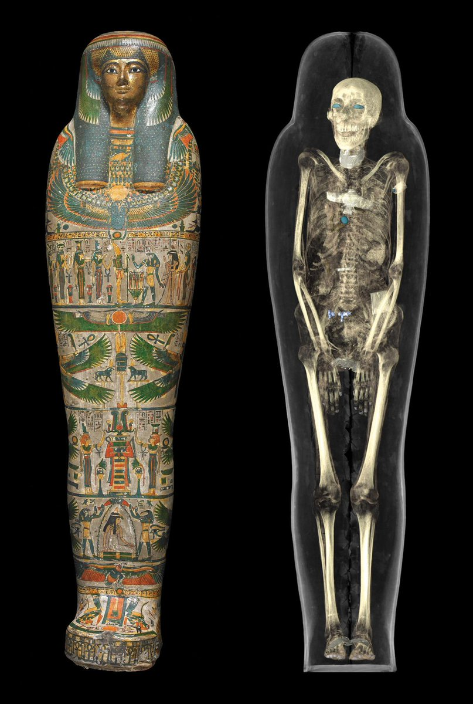
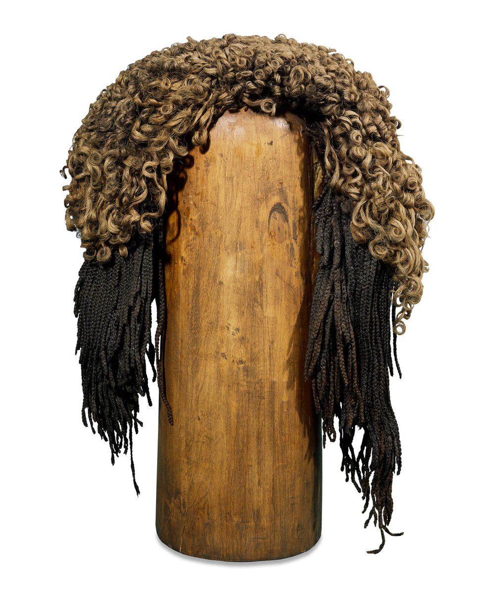
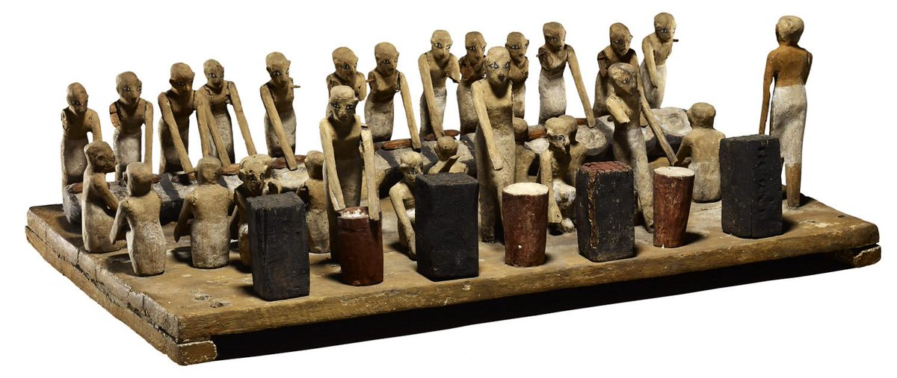

#MummyMonday
To celebrate the extension of our #8mummies exhibition until July 2015, here's a collection of all our #MummyMonday posts so far!
-
Did you know there are 120 mummies from Egypt and Sudan in the collection? #MummyMonday pic.twitter.com/ib1Lu6vbQk
-
 On #MummyMonday here’s a first glimpse of the #8mummies you’ll encounter in the exhibition http:// ow.ly/x0Nqy pic.twitter.com/XsllFJnY4f
On #MummyMonday here’s a first glimpse of the #8mummies you’ll encounter in the exhibition http:// ow.ly/x0Nqy pic.twitter.com/XsllFJnY4f -
-
-
-
-
-

-

-
Meet these #8mummies in this groundbreaking new exhibition and learn more about their lives http:// ow.ly/x0Nqy pic.twitter.com/5iQ4jfjlxE
-
This #MummyMonday you can meet each of the #8mummies before the exhibition. Read more here http:// ow.ly/xbQS3 pic.twitter.com/hL9t4baQKm
-
This #MummyMonday see how some of our young visitors created this amazing #8mummies tomb! http:// ow.ly/xwc8Y pic.twitter.com/NK9DKlxABq
-
We’re celebrating #MummyMonday with a word cloud of all your reviews of #8mummies so far! http:// ow.ly/xNp4Q pic.twitter.com/5Ov5Jtuo36
-
On #MummyMonday join #8mummies Curators on a voyage of scientific discovery in this new video http:// ow.ly/y4Z71 pic.twitter.com/we2Ma0TqdF
-
 This #MummyMonday meet Gebelein Man B, the first of the #8mummies in the exhibition http:// ow.ly/yeaEe http://www. youtube.com/watch?v=uV6Cc4 r4-B8 …
This #MummyMonday meet Gebelein Man B, the first of the #8mummies in the exhibition http:// ow.ly/yeaEe http://www. youtube.com/watch?v=uV6Cc4 r4-B8 … -
Scans show an embalmer’s tool still lodged in this mummy’s skull http:// ow.ly/yB5aX #MummyMonday #youhadonejob https://www. youtube.com/watch?v=v9jQx3 uN8rU …
-
Meet Tamut – CT scans revealed amulets inside her (still-sealed) mummy case #MummyMonday http:// ow.ly/yQBK7 pic.twitter.com/eNK09uHTzo
-
Our new Early Egypt Gallery (Room 64) includes a virtual autopsy of a mummy #MummyMonday http:// ow.ly/z7YEA https:// vine.co/v/MxxPTV6nd66
-
Learn more about life and death in prehistoric Egypt and Sudan in this new blog post http:// ow.ly/z7ilO pic.twitter.com/1KQgD1rI8k
-
Meet Tjayasetimu: a temple singer who died at the tender age of just 7 #MummyMonday #8mummies http:// ow.ly/znU51 pic.twitter.com/intc3lb2zR
-
This unusual mummy had his arms, legs, fingers and toes individually wrapped #MummyMonday http:// ow.ly/zE4ek pic.twitter.com/c3EqRKP5Pd
-
 A poignant #MummyMonday today: this mummy from the Roman period died at just two years old http:// ow.ly/zUL9f pic.twitter.com/RhMYaanqTF
A poignant #MummyMonday today: this mummy from the Roman period died at just two years old http:// ow.ly/zUL9f pic.twitter.com/RhMYaanqTF -
A rare Christian tattoo was found on this naturally mummified woman #MummyMonday #8mummies http:// ow.ly/Ab7bv pic.twitter.com/prdHa9Ue2o
-
 Discover more about this mummy's intriguing tattoo in these videos http:// ow.ly/AbrZe #MummyMonday @TFBtattoo pic.twitter.com/01QO2hqNK6
Discover more about this mummy's intriguing tattoo in these videos http:// ow.ly/AbrZe #MummyMonday @TFBtattoo pic.twitter.com/01QO2hqNK6 -
Unlock hidden secrets using the latest technology in our #8mummies exhibition #MummyMonday http:// ow.ly/AqKIB pic.twitter.com/kNTYR2IlVv
-
Discover #8mummies with the whole family, with fun trails and free entry for kids #MummyMonday http:// ow.ly/ACiF9 pic.twitter.com/PaqAp9BT8z
-
Mummies (& daddies/carers) can also enjoy a special view of #8mummies on 9 Sep #MummyMonday http:// ow.ly/AAzQq pic.twitter.com/vd9dbAvs2n
-
Don't miss our free Egyptian themed workshops this weekend in the #SamsungCentre #MummyMonday http:// ow.ly/ADdh6 pic.twitter.com/ZKweDQkMZt
-
See how the #8mummies were digitally unwrapped in this @SamsungUK video #MummyMonday http:// ow.ly/Bduii pic.twitter.com/zaVeHNG9O2
-
Hear a talk on how CT & MRI scans are opening up new worlds of understanding http:// ow.ly/Bvt6H #MummyMonday pic.twitter.com/C1Ms8Vl2Jw
-
A fan of mighty ducks? It's #MummyMonday so here's one inspired by ancient Egypt from @BMshop http:// ow.ly/BLEcA pic.twitter.com/Lo7xbnR8QA
-
Explore the full range of Egyptian gifts & goodies in #8mummies exhibition shop #MummyMonday http:// ow.ly/BKY3Z pic.twitter.com/zUFkuVu3Ni
-
This toy horse may look remarkably modern, but it dates from the Roman period in Egypt (after 30 BC) #MummyMonday pic.twitter.com/IomX76svzH
-
Find out more about childhood in ancient Egypt in our #8mummies exhibition #MummyMonday http:// ow.ly/C4HmO pic.twitter.com/VjLJafxqw6
-
This #MummyMonday try mummifying an orange! #8mummies http:// ow.ly/Ck5wz pic.twitter.com/RQC9FC6VCm
-
Due to popular demand, our #8mummies exhibition is extended until April 2015! #MummyMonday http:// ow.ly/CEWAc pic.twitter.com/UJ7Eg6U9S7
-
To celebrate #8mummies extending to April 2015, catch up on all our #MummyMonday posts so far! http:// ow.ly/D2L0k pic.twitter.com/eiwHF5h9O7
-
This half-term is the perfect time to visit our fascinating exhibition #8mummies ! #MummyMonday http:// ow.ly/Dd2d4 pic.twitter.com/xSpVLPVbuP
-
Kids under 16 go free to #8mummies and families can pick up a free family trail #MummyMonday http:// ow.ly/Dd2d4 pic.twitter.com/YQPGZiH60A
-
Enjoy new #8mummies events: curator talks and a lecture on 'cursed' objects! #MummyMonday http:// ow.ly/DIJvA pic.twitter.com/iGe04l8Vo5
-
These Egyptian children’s shoes are 14cm long and over 3,000 years old! #8mummies #MummyMonday http:// ow.ly/DXwbR pic.twitter.com/HaSZbvlUBD
-
Discover more about childhood in ancient Egypt in our #8mummies exhibition #MummyMonday http:// ow.ly/DXwbR pic.twitter.com/AgQKhiiXPi
-
'Little feet': new sessions for under 5s. The next one's inspired by mummies! #MummyMonday http:// ow.ly/DXwrd pic.twitter.com/4Fn5vK7BH3
-
Get a taste of our new under 5s events with this @Pinterest board #MummyMonday http:// ow.ly/DXwka pic.twitter.com/w8lr48F351
-
In ancient Egypt mummy masks showed ideal portraits of the dead. Now see their real faces in #8mummies #MummyMonday pic.twitter.com/b4gvCmnd9R
-
This beautiful #8mummies mask depicts high-ranking woman Satdjehuty #MummyMonday http:// ow.ly/Eo8Qi pic.twitter.com/N9PT1UOrzK
-
This beautiful #8mummies cartonnage mask uses gold to connect to the sun god Re #MummyMonday http:// ow.ly/EMK9L pic.twitter.com/k0fD7vPmez
-
 Our new Little feet events for under 5s start this Fri! It's all about mummies... #MummyMonday http:// ow.ly/EAjsC pic.twitter.com/B0M02VyO1s
Our new Little feet events for under 5s start this Fri! It's all about mummies... #MummyMonday http:// ow.ly/EAjsC pic.twitter.com/B0M02VyO1s -
 This #8mummies cartonnage mask was for a 20-year-old woman named Aphrodite #MummyMonday http:// ow.ly/F8HsB pic.twitter.com/m2zkLggube
This #8mummies cartonnage mask was for a 20-year-old woman named Aphrodite #MummyMonday http:// ow.ly/F8HsB pic.twitter.com/m2zkLggube -
See new objects in #8mummies including this amulet and cippus (small pillar) #MummyMonday http:// ow.ly/FwwJz pic.twitter.com/TGCbr2t1fX
-
This new #8mummies tablet shows Horus fending off crocodiles, snakes & scorpions! #MummyMonday http:// ow.ly/FTYCT pic.twitter.com/7xpAn1yYHn
-
Inspired by ancient Egypt in #NightAtTheMuseum ? Check out this sarcophagus in 3D! #MummyMonday http:// ow.ly/G7Rxp pic.twitter.com/BlMaKEdzgX
-
Explore #8mummies with a family trail over the holidays! Under 16s go free #MummyMonday http:// ow.ly/G63Hn pic.twitter.com/W0uP0JU39k
-
 Discover the secrets of this 5,000-year-old mummy in #8mummies , extended to April #MummyMonday http:// ow.ly/GNkSi pic.twitter.com/ZtCRNPNR2G
Discover the secrets of this 5,000-year-old mummy in #8mummies , extended to April #MummyMonday http:// ow.ly/GNkSi pic.twitter.com/ZtCRNPNR2G -
Found in a woman’s coffin, this male mummy’s identity remains a mystery #8mummies http:// ow.ly/H1rzR #MummyMonday pic.twitter.com/ZVFTotbhRP
-
CT scanning has revealed amulets under this mummy’s wrappings #8mummies #MummyMonday http:// ow.ly/HytQl pic.twitter.com/3DCQkH0o6X
-
This mummy’s case tells us that he worked as a temple doorkeeper #8mummies #MummyMonday http:// ow.ly/HO6XG pic.twitter.com/cl3thh2jNf
-
Tjayasetimu's unusual case depicts her arms & feet exposed, as if alive #8mummies #MummyMonday http:// ow.ly/HOrCn pic.twitter.com/UPaYqdtZmM
-
The fingers and toes of this Roman mummy have been individually wrapped #MummyMonday #8mummies http:// ow.ly/IysI7 pic.twitter.com/t3VilLCkhY
-
Tutankhamun’s burial chamber was unsealed #onthisday in 1923 in Egypt #MummyMonday http:// ow.ly/J6Q1T pic.twitter.com/1BvN7WnZXK
-
 These children's sandals are also over 3,000 years old! See them in #8mummies this half-term http:// ow.ly/IVPVU pic.twitter.com/0J9jVZsMi6
These children's sandals are also over 3,000 years old! See them in #8mummies this half-term http:// ow.ly/IVPVU pic.twitter.com/0J9jVZsMi6 -
The beautiful cartonnage of this Roman child indicates his high status #MummyMonday #8mummies http:// ow.ly/JmPDH pic.twitter.com/kNWnKPVLiP
-
A rare Christian tattoo was found on this naturally mummified woman #MummyMonday #8mummies http:// ow.ly/JOrff pic.twitter.com/PhQUt9OMwZ
-
Wigs were common in ancient Egypt. This one in #8mummies is over 3,000 years old! #MummyMonday http:// ow.ly/JYTh9 pic.twitter.com/tNG2cav39z
-
This mummy has never been unwrapped, but 3D scans have revealed amulets inside #MummyMonday http:// ow.ly/KnU0O pic.twitter.com/8YmLAX8yNl
-
Amazingly, 3D printers have now enabled us to reproduce these amulets #MummyMonday #BSW15 http:// ow.ly/KdsM3 pic.twitter.com/NcJ1cu9aFV
-
Don’t miss our exhibition #8mummies before it wraps up on 19 April #MummyMonday http:// ow.ly/KdsM3 pic.twitter.com/MDIsmoZbji
-
Embalmer’s secret revealed? CT scans show a brain-removal tool left in this mummy’s skull #MummyMonday #secretsMW pic.twitter.com/4MUWX5NjC4
-
We are excited to announce that #8mummies is now extended until 12 July 2015! #MummyMonday http:// ow.ly/KYtjr pic.twitter.com/gdtpgHYAaS
-
Here are #8mummies you’ll meet in the exhibition, plus a @Storify of our #MummyMonday so far! http:// ow.ly/KYfCv pic.twitter.com/5ih0V0vxkv
-
Discover how the #8mummies were scanned for this groundbreaking exhibition #MummyMonday http:// ow.ly/L1bTV pic.twitter.com/bGEgbi8wf5
-
#DidYouKnow the Museum has over 400 human and animal mummies in the collection? http:// ow.ly/LlGY1 #MummyMonday pic.twitter.com/sOoqw4iE15
-
Come face to face with #8mummies in our exhibition & unlock their hidden secrets #MummyMonday http:// ow.ly/LlIhO pic.twitter.com/TBlOIB8SMk
-
 Think you know mummies? Think again… #8mummies #MummyMonday http:// ow.ly/LAD3s pic.twitter.com/ci1Lyk0HPM
Think you know mummies? Think again… #8mummies #MummyMonday http:// ow.ly/LAD3s pic.twitter.com/ci1Lyk0HPM -
These ancient Egyptian toys of a mouse and horse are 2,000+ years old! #8mummies #MummyMonday http:// ow.ly/M1S7j pic.twitter.com/7zDynIAIBT
-
 In ancient Egypt, temple rituals were performed daily with song & music #MummyMonday #8mummies http:// ow.ly/Mtm47 pic.twitter.com/FcIJbBTNq0
In ancient Egypt, temple rituals were performed daily with song & music #MummyMonday #8mummies http:// ow.ly/Mtm47 pic.twitter.com/FcIJbBTNq0 -
See these instruments in #8mummies : an arched harp and a pair of bone clappers #MummyMonday http:// ow.ly/Mtm47 pic.twitter.com/ZwpOSbMbgg
-
Video: why were hair and wigs so culturally significant for ancient Egyptians? #MummyMonday http:// ow.ly/MwLOE pic.twitter.com/jtAMQwbmQf
-
These beautiful death masks transformed the mortal into the divine #MummyMonday #8mummies http:// ow.ly/N4Mf3 pic.twitter.com/hLqHkl7HMB
-
 With the latest technology, we can now look into the faces of #8mummies http:// ow.ly/MWq5b #MummyMonday pic.twitter.com/p8qtpqlY2y
With the latest technology, we can now look into the faces of #8mummies http:// ow.ly/MWq5b #MummyMonday pic.twitter.com/p8qtpqlY2y -
Take the free interactive #8mummies exhibition family trail this half-term! #MummyMonday http:// ow.ly/NnSDi pic.twitter.com/TLUA348GN0
-
This model from a 4,000-year-old tomb shows an ancient Egyptian brewery #MummyMonday #8mummies http:// ow.ly/NHpHb pic.twitter.com/5ylRZhjk9v
-
During mummification organs were placed in four canopic jars for godly protection #MummyMonday http:// ow.ly/NVEcx pic.twitter.com/qgoLIIDiY9
-
Ancient Egyptians treated ailments with both practical remedies & magical rituals #MummyMonday http:// ow.ly/OkbEg pic.twitter.com/BC21sjG8yT
-
Ancient Egyptians placed amulets onto mummies to harness supernatural powers #MummyMonday http:// ow.ly/OCfSt pic.twitter.com/JijKfLcSEv
-
The inscriptions on this mummy's case tell us he was Chief Doorkeeper of the Domain of Ra #MummyMonday #8mummies pic.twitter.com/afvlqTTlua